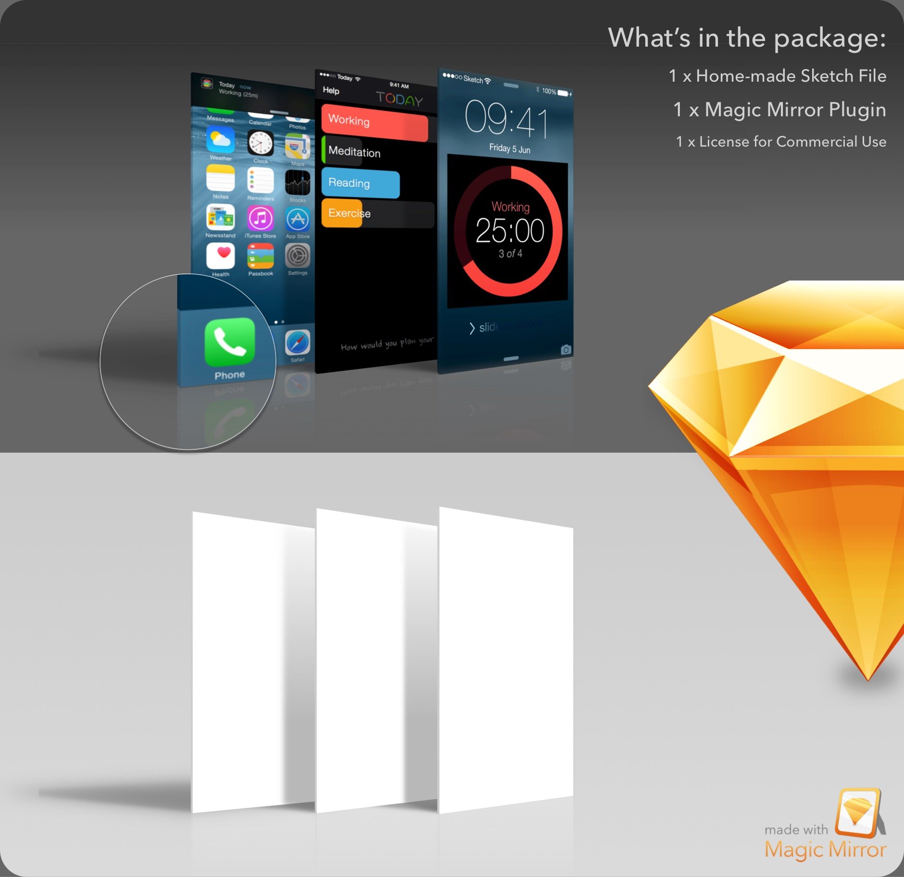

Introducing Magic Mirror for Sketch 3
Magic Mirror for Sketch 3 is a Sketch Plugin that can create a perspective-transformed image from an artboard and apply it to a shape.
You can consider it a simple version of Photoshop’s Embeded Smart Objects for Sketch.
Here's what Magic Mirror can do:
What's different?
Unlike Symbols, Magic Mirror uses a Pattern Fill to create the mirroring. It can mirror any number of Artboards to any number of shape layers in any size, any angle, but ALSO responds to the shape’s distortion (perspective transformation).
Unlike editing Bitmaps in Sketch, Magic Mirror does not modify the original bitmap in a destructive way (since we’re sourcing from an Artboard). Using Shape layers instead of Bitmap layers, editable paths are preserved and can be easily updated.
Installation
- Download the plugin, unzip it and locate
Magic Mirror.sketchplugin. - Double click to install the plugin. If you have multiple versions of Sketch, you can drag the plugin into the specific Sketch dock icon.
- Check that it’s available in the
Pluginsmenu.
- Consider donating to the project :)
How to use?
Magic Mirror currently offers three handy methods.
1. Magic Mirror! (⌃ ⇧ M)
Apply perpective transform to all layers that can be associated with an artboard with the same name.

- Prepare a source artboard
- Use the
Rectangle (R)orVector (V)tool to draw a 4 points polygon. It’s important NOT to use theRound Recttool, because Magic Mirror needs exactly 4 control points to work properly. - Rename your shape layer to exactly match the Artboard’s name you want to mirror.
- Press
⌃ ⇧ Mor go toPlugin > Magic Mirror > Magic Mirror!to see the results!
2. Jump to Artboard (⌃ ⇧ J)
Quickly jump to the layer’s associated artboard.

- Select the magic shape layer you’re currently working on.
- Press
⌃ ⇧ Jor usePlugin > Magic Mirror > Jump to Artboard.
3. Rotate Points (⌃ ⌘ ⇧ R)

Rotate the content orientation of the layer fill.
- Select the layer
- Press
⌃ ⌘ ⇧ Ror usePlugin > Magic Mirror > Rotate Points.
So how does it work? (In short)
Magic Mirror iterates through all the “Shape” layers (MSShapeGroup) in the current page, and finds all the Artboard-Layer pairs that share the exact same name.
Then it looks into the path (NSBezierPath) and extracts the 4 corner points.
It then hands the content over to (Core Image) to do Perspective Transformation, and apply the transformed image using Pattern Fill.
Donation
Magic Mirror is an open source project on GitHub. You can freely checkout the source code and contribute to the project. However, if you decide to donate to the project, you'll get a special package for free :)

You've probably seen similar perspective mockup tools like this before, but they're all for Photoshop. I recreated this entirely in Sketch, everything is adjustable and scalable.
Why should I donate?
First, because I would like to continue developing the product and keep helping the community to better utilize our tools. I believe good ideas and things with proper execution require dedicated time and effort. The only way for me to do so is to have sustainable revenue from the things we work on.
Second, this represent a new era of design possibilites that we'll be able to do with Sketch. I hope from now on we'll see more and more perspective mockups dedicated for Sketch, which we all loved.